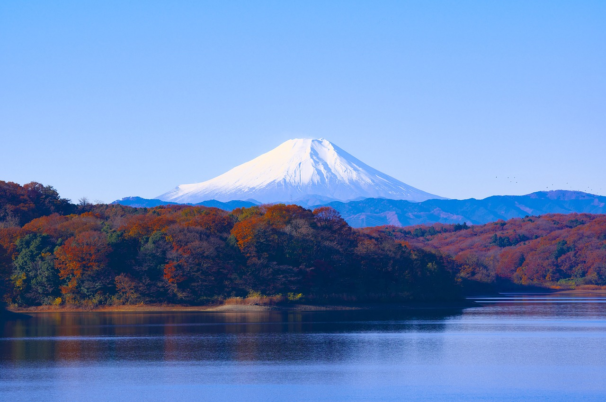
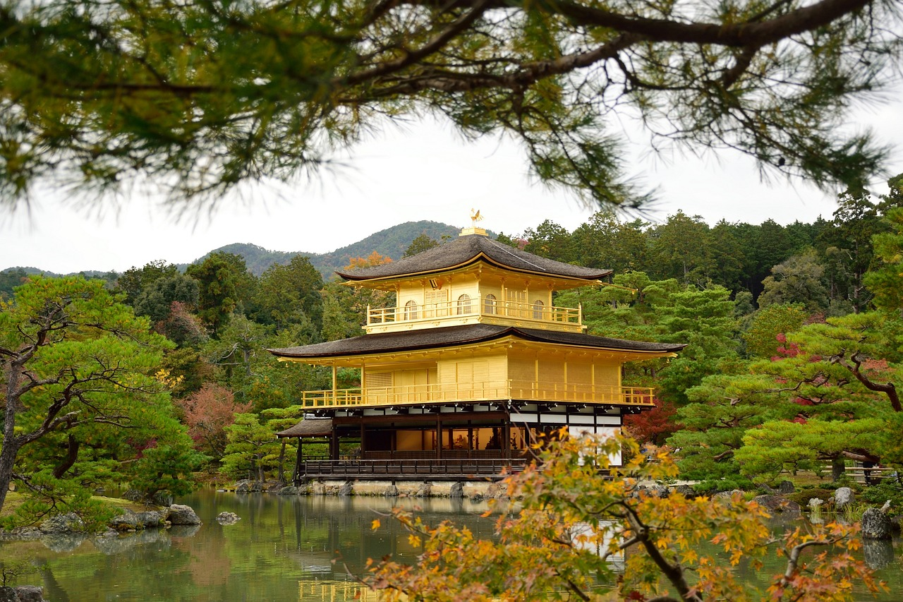
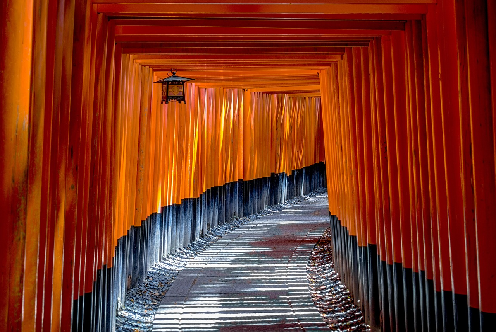
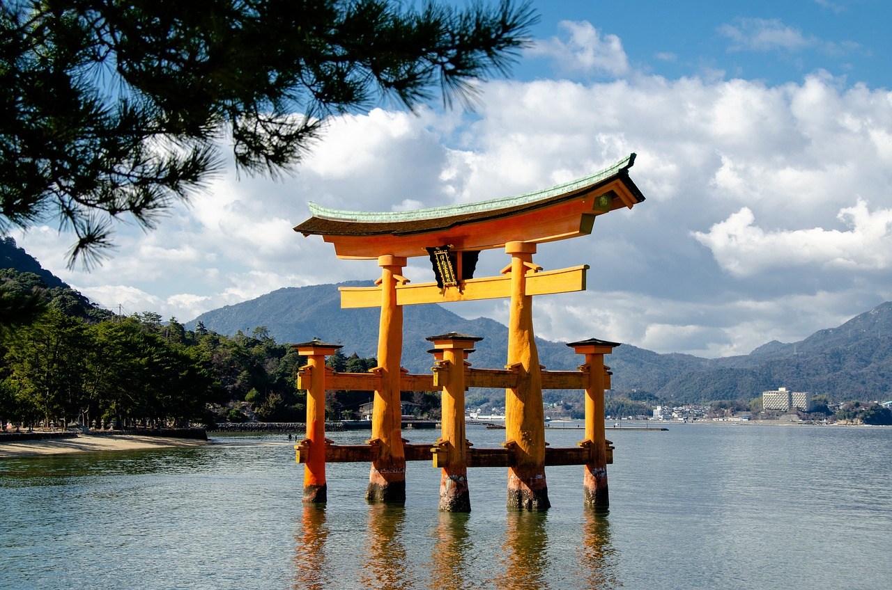
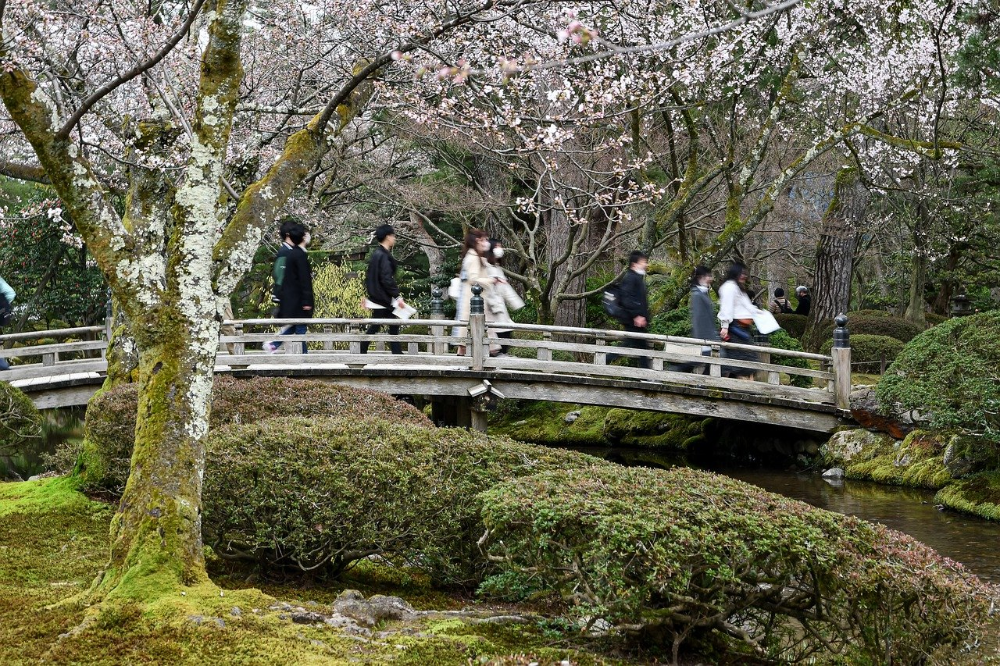
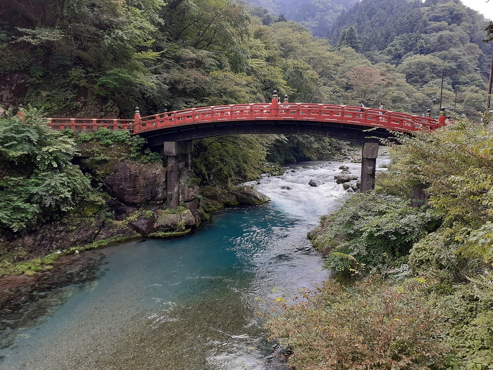
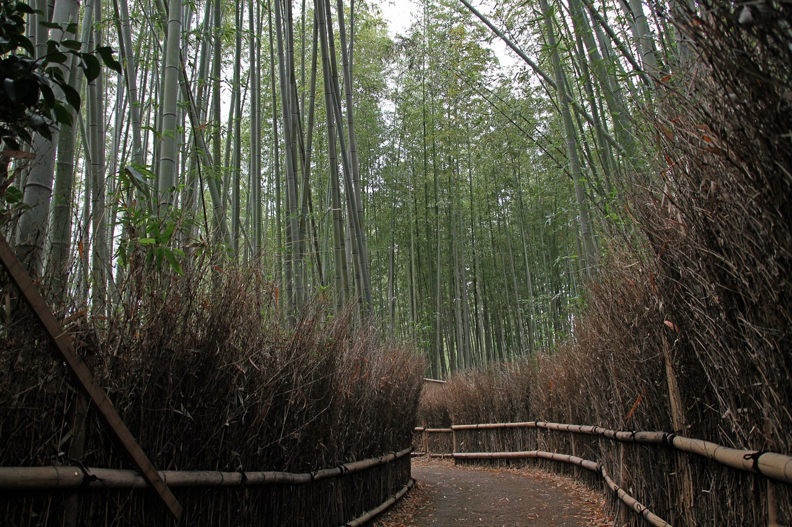
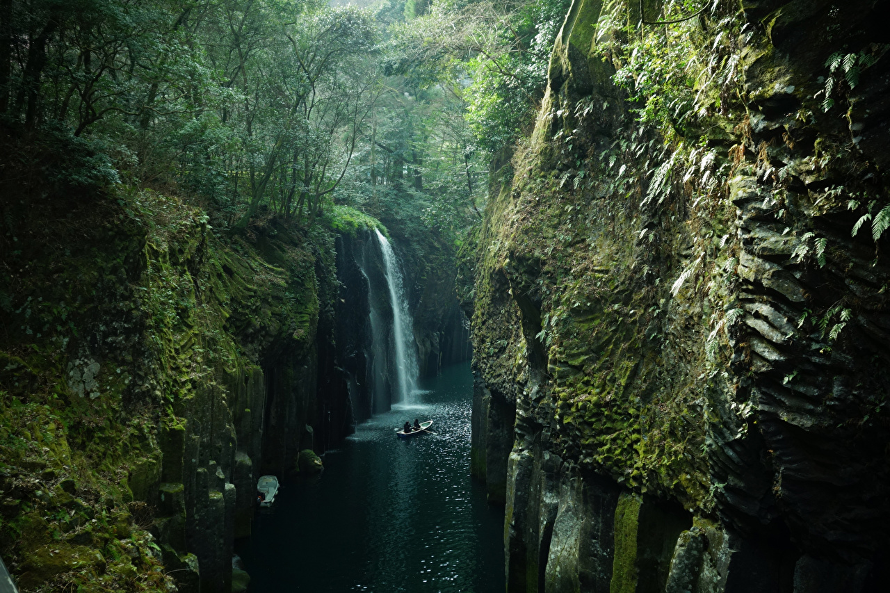
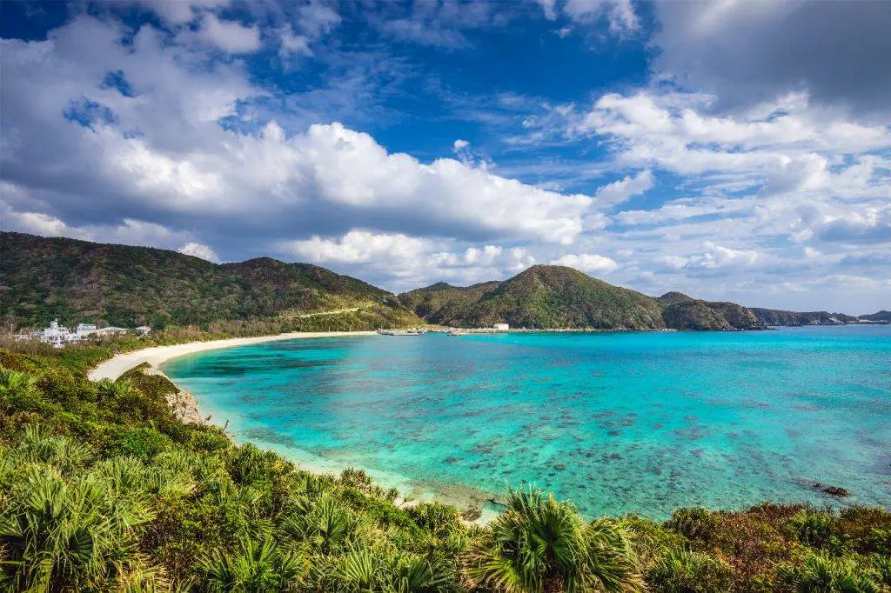

Les 10 lieux emblématiques du Japon
Bienvenue dans la section dédiée aux paysages du Japon, où la nature se dévoile sous toutes ses formes. Des montagnes majestueuses aux plages paradisiaques, en passant par les forêts mystiques et les jardins zen, le Japon est un pays de contrastes naturels. Chaque région offre des panoramas uniques, façonnés par les saisons qui transforment ces paysages tout au long de l'année. Que vous soyez attiré par la beauté sereine du Mont Fuji, les cerisiers en fleurs au printemps ou les paysages enneigés de l’hiver, le Japon est une terre de découverte et de contemplation, où la nature joue un rôle central dans la culture et la vie quotidienne.
1 - Mont Fuji

Le volcan sacré du Japon, souvent recouvert de neige, est l'un des symboles les plus reconnaissables du
pays.
En savoir plus
2 - Temple Kinkaku-ji

Le Pavillon d'Or à Kyoto, célèbre pour son architecture recouverte de feuilles d'or et son reflet sur
l'étang qui l'entoure.
En savoir plus
3 - Sanctuaire Fushimi Inari

Connu pour ses milliers de torii rouges, ce sanctuaire dédié à la déesse Inari est un lieu de pèlerinage
populaire à Kyoto.
En savoir plus
4 - Île de Miyajima

Abritant le célèbre torii flottant du sanctuaire d'Itsukushima, cette île est l'un des plus beaux
paysages maritimes du Japon.
En savoir plus
5 - Jardin Kenroku-en

Situé à Kanazawa, ce jardin est considéré comme l'un des trois plus beaux jardins paysagers du Japon,
avec ses ponts et ses étangs.
En savoir plus
6 - Château de Himeji

Aussi appelé le "Château du Héron Blanc", c'est l'un des plus anciens et des plus beaux châteaux du
Japon.
En savoir plus
7 - Parc national de Nikko

Un site naturel magnifique avec des cascades, des lacs et des montagnes, ainsi que des temples et
sanctuaires inscrits au patrimoine mondial.
En savoir plus
8 - Bambouseraie d’Arashiyama

Une forêt de bambous mystique près de Kyoto, offrant une expérience visuelle et sonore unique lorsqu’on
se promène parmi les arbres.
En savoir plus
9 - Takachiho Gorge

Une gorge spectaculaire située à Kyushu, avec des falaises de basalte et des cascades magnifiques, idéale
pour des promenades en barque.
En savoir plus
10 - Okinawa

Cet archipel tropical au sud du Japon est réputé pour ses plages de sable blanc, ses eaux cristallines et
sa culture distincte de celle du Japon continental.
En savoir plus